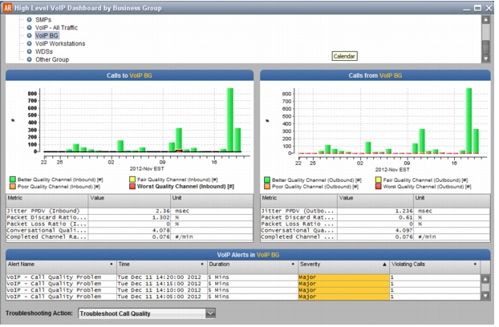

High Level VoIP Dashboard by Business Group This insight is useful when you want to navigate through many Business Groups and find groups with problematic voice and/or video calls. After you identify Business Groups of interest, you can launch more focused insights to investigate and troubleshoot these groups in more detail. Figure 6 High Level VoIP Dashboard by Business Group  The following steps outline the general workflow: 1) Open the insight (Insights > VoIP > High Level Dashboard by Business Group) and select the BG or BG Container of interest. – The "Calls to" and "Calls from" graphs show all voice and video calls for the selected group, with separate bars for each time window based on call quality. – The VoIP Alerts table shows all defined (in the Alert Manager) VoIP alerts that were triggered within the current Project time. You can also open this insight from the High Level VoIP Dashboard: double-click on a BG and the Dashboard by Business Group opens with the BG of interest selected. 2) To troubleshoot the selected group in another insight, set the Troubleshooting Action pull-down menu (bottom of window) 3) To examine a subset of voice/video traffic in a Time Zoom Table, double-click on a bar in the "Calls to" or "Calls from" graph. 4) To examine the calls associated with a specific alert, double-click in the VoIP Alerts (bottom) table (or right-click and choose View Violating Call Records).